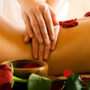

Déjate llevar por el suave tacto del aceite y relájate…tu cuerpo te lo agradecerá
Para que tu estancia sea inolvidable, además del descanso, el aire fresco, los agradables paseos… también podrás disfrutar de servicio de masajes relajantes en la propia casa.
Ambientación con música, velas y un masaje frente a la chimenea serán los aliados perfectos para relajarse al máximo.
Masaje Americano
 |
Masaje para 2 personas | Precio 60 € |
Masaje Americano |
|---|---|---|---|
| Masaje sensitivo que combina técnicas manuales orientales y occidentales realizado con maniobras lentas y suaves armonizando la respiración del paciente. Obsequio de Masaje Facial. El Masaje se realiza en la propia casa, ambientado con velas y música relajante. Duración 1 hora. 30 minutos por persona. | |||
Masaje Sueco
 |
Masaje para 2 personas. | Precio 60 € |
Masaje Sueco |
|---|---|---|---|
| Masaje basado en maniobras vigorosas y energéticas que abarcan grandes regiones anatómicas, ayudando a la mejora de la circulación y aliviando la tensión muscular. Obsequio de Masaje Facial. El Masaje se realiza en la propia casa, ambientado con velas y música relajante. Duración 1 hora. 30 minutos por persona. | |||
Masaje Alemán
 |
Masaje para 2 personas. | Precio 60 € |
Masaje Alemán |
|---|---|---|---|
| Técnica manual mas completa por reunir varios métodos de masaje en uno además de incorporar técnicas propias como amasamiento digital y nudillar. Obsequio de Masaje Facial. El Masaje se realiza en la propia casa, ambientado con velas y música relajante. Duración 1 hora. 30 minutos por persona. | |||
Como dice el refrán: Si un buen fin de semana quieres pasar los apartamentos Rurales Señora Clara has de visitar